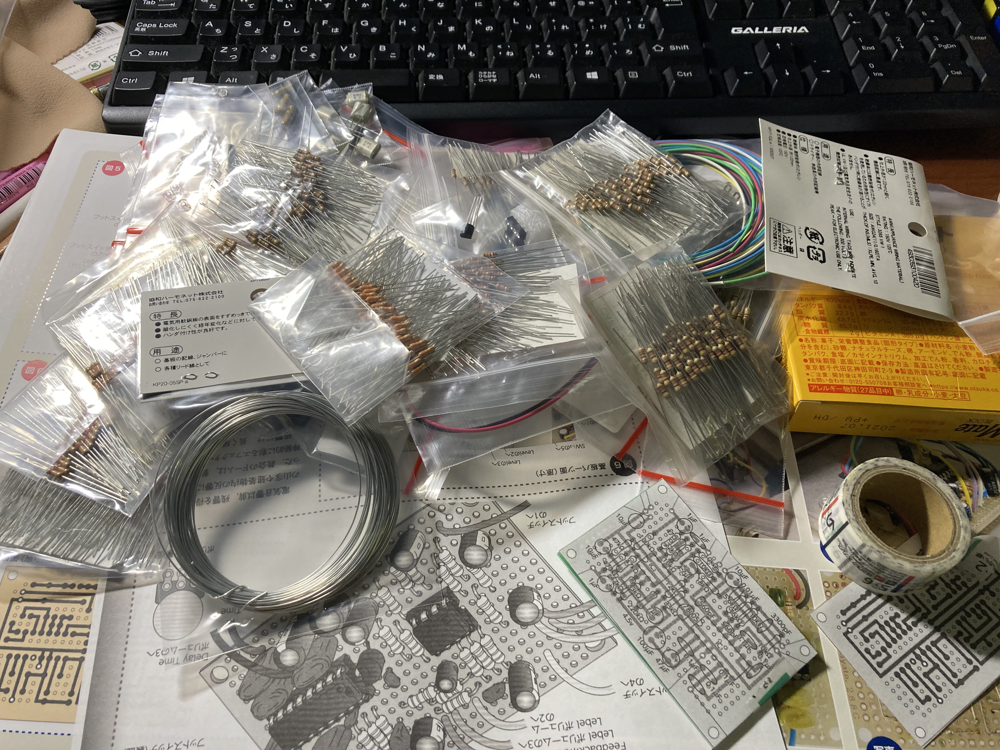
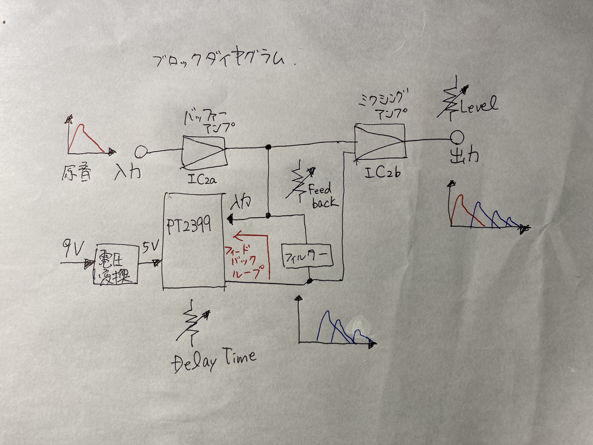

ディレイエフェクターを作ってみた
2020/10/31
今年に入って、感染症の蔓延で自宅待機時間がめちゃくちゃ増えてギターを練習するようになりました。
そこで、ギターの音に効果を加えて楽しむエフェクターをいくつか買い漁っていたのですが、せっかく電気工学研究会で活動しているので エフェクターを作ってみようと思いました。
私はすかんちというバンドのRollyさんというギタリストが大好きなので、この方が出ているエフェクター制作本 『Rollyと作るギターエフェクター』（2014/4/10発売）のp60~65を参考にしました。
目次
- ディレイ エフェクターってなんやねん
- 作り始め
- 基盤に電子部品をハンダ付け
- 基盤以外の部品を繋ぐ
- 導通テスター&デバッグ
- 完成してません、反省
- 軽くディレイ エフェクターの原理について
ディレイ エフェクターってなんやねん
「はじめてのディレイ・エフェクター【ギター博士】」本当は完成したもので実演できるといいんですが、、今回完成しなかったのでギター博士に 登場していただきます。上リンクからどうぞ。
作り始め
秋月から買った電子部品が山積みです汗
抵抗がたくさん。部品ケース買わないとな〜
基盤に電子部品をハンダ付け

基盤に配線が書かれた図が親切にもあったので、印刷して基盤に貼り付けて部品を載せていきました。
部品を載せやすいように、粘土とクリップで基盤を固定しました。
裏の配線も図の通りにハンダでつなげていきました。部品の足を切った時に余った針金を導線にしました。何気にこの作業が初めてやるのもあって一番大変な工程でした。
配線が終了したので基盤の上に重ねた紙を剥がしたところです。
基盤以外の部品を繋ぐ
基盤の外側には、スイッチボタン1個、ボリュームつまみ3個、アナログとステレオの入力端子2個、電池接続端子、青色LEDがあります。
配線図を読み慣れていない私は、テキストに記載の画像通り配線してみました。
何度も画像と照らし合わせて確認したので、この配線であっているはずなんですが、、、複雑な配線で少し自信がない。
導通テスター&デバッグ
ここが電子工作で1番肝心要のところです。
テスター（マルチメーター）の使い方は調べて分かったのですが、いざ回路のデバッグをやってみるとやり方がわからん！
これまでは、今回ほどの複雑な回路を組んだことがなかったので調べる箇所が少なくて済んだのですが、今回は難しい、、
自分なりに、ここを調べて、、などと当てずっぽうなデバッグをしてしまいました。導通しているのか、導線の問題か、ハンダ付けの問題か、部品がそもそも間違っているのか、部品の向きが間違っているのか、配線が間違っているのか、考えると可能性にキリがない。
ここで心が折れて放置してしまいました。ごめんなさい。
後日、最近はyoutubeでhow toが見れるのでそれでデバッグの仕方について勉強しているので、理大祭には間に合わないのですがなんとかデバッグして最後まで作り切りたいと思います。
後ほど、youtubeでデバッグのやり方を見て回路の切り分けが大事で、Output側からInput側へと回路を切って導通テストしていくと効率がいいんですね。自分で考えるのもいいけど一般的なやり方を勉強すべきだと思いました。
完成してません、反省
今回のディレイ エフェクターはテキスト記載の10個中9個目で回路が複雑な作品でした。シンプルな回路のBoosterエフェクターやFuzzエフェクターを作成してみて、簡単なものができてから複雑なDelayエフェクターを作成すべきでした。
「テスターで回路の不具合を見つける方法」（電気工作youtuberなかしー氏）とかを参考に勉強していきます。
回路図を読まずに、見たままありきでこれまで作ってきたので今回痛い目を見ました。回路図に忠実にこれからは作成していきたいと思います。
回路図の読み方、部品の特徴、デバッグのやり方について勉強していこうと思います。反省！！！！！
回路のデバッグが終わったら、アルミケースに収納しようと思います。
軽くディレイ エフェクターの原理について
フィードバックループという回路によって入力した音が繰り返し回路の中で回っていて、音が遅れて繰り返すタイミングはPT2399というICによって決められているようです。
フィードバックループの途中に抵抗が入っているので、音は何度も通過するうちに減衰して消えていくそうです。
同書p60参照